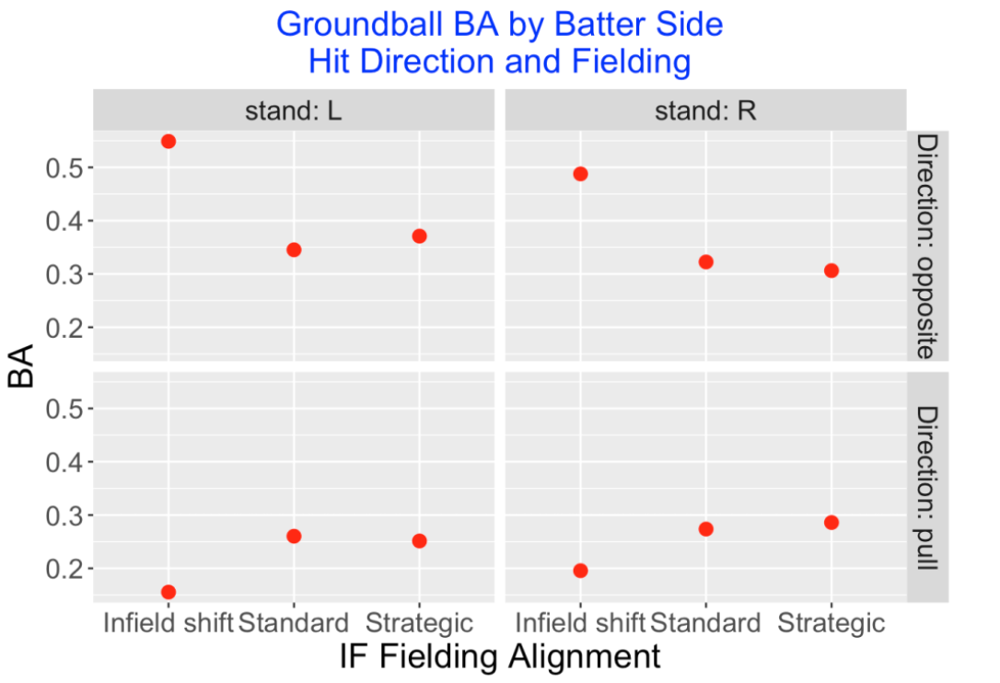
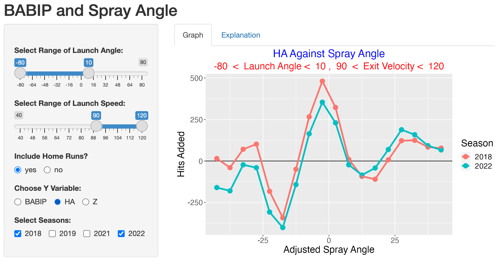

Spray Angle
1 Introduction
This collection of blog posts from “Exploring Baseball Data with R” focuses on applications of the spray angle measurement in baseball.
Spray angles of hitters are useful in understanding the best positioning of the defense. Sections 2 and 3 explore the use of defensive infield shifts between teams and the effectiveness of this defensive strategy.
Section 4 describes the use of a generalized additive model to show how the probability of a base hit depends on the launch angle, exit velocity and spray angle. This section describes how one computes the spray angle from Statcast data.
A spray chart is the graph of the locations of a batter’s balls in play over the field. Sections 5 and 6 describe the construction of spray charts. Several Shiny apps are described that facilitate the comparison of spray charts between several batters of interest.
Section 7 describes the relationship between the launch variables launch angle and exit velocity, zone location, and batted ball location. A Shiny app is described which allows one to select regions of one variable of interest (among launch variables, zone location, and batted ball location) and see how it affects values of the other two variables.
Section 8 describes the use of a Shiny app that explores batted ball rates across different seasons. In this app, one can choose the type of batted ball and compare batting averages across seasons. This illustrates the effectiveness of defensive positioning in recent MLB seasons.
2 Exploring Infield Shifting
2.1 Jake Arrieta
Jake Arrieta recently got into the news by criticizing the Phillies for their poor use of defense shifts. Thinking about defense shifts, Baseball Savant recently made infield and outfield assignment information available and one can download this data using the baseballr package. Here we’ll introduce this new shifting data and do a brief exploration. Here are some questions to get us started:
- How does infield shifting vary among teams?
- Who are the current hitters who are most shifted?
- Is shifting effective?
This won’t be a complete analysis, but it hopefully will get the interested reader going on his or her own analysis.
2.2 Shifting per Plate Appearance
When you download the 2018 Statcast data for batters, there are two new variables “if_fielding_alignment” and “of_fielding_alignment” that indicate the defensive alignment in the infield and outfield. Since each row of the data frame represents a pitch, this allows for changes in the defense alignment for each pitch. Focusing on the infield alignment, there are three values – “Standard” indicates the usual positioning, “Infield shift” indicates there are three or more infielders on one side of 2nd base, and “Strategic” represents positioning that is neither Standard or Infield Shift. MLB provides a nice webpage describing these infield alignments.
Although infield positioning can vary across pitches, we will focus on the positioning at the last pitch of a PA. For each PA, I collect (1) the top or bottom half of the inning, (2) the PA event, (3) the launch angle and launch speed of this last pitch, (4) the infield positioning, (5) the batter’s name and (6) the side of the batter. Knowing the home and away teams and the top/bottom of inning indicator, I can define a new variable “defense” which is the team that is playing defense for a particular half-inning.
2.3 Shifts by Teams
One thing I know is that positioning can vary depending on the side of the hitter. For each team, I compute the percentage of infield shifts against right-handed batters and the percentage of infield shifts against left-handed batters. I plot a scatterplot of these percentages below. The red line is the line y = x – note that all points are above the line indicating that all teams are more likely to shift against left-handed batters. (These summaries are reported by Baseball Savant which agree with the values presented here.)
The variation of shifting among the teams is remarkable. Houston will shift 60% of the time against left-handed hitters – in contrast, the Cubs rarely shift against either right-handed or left-handed hitters. We see the Phillies are above-average in their shifting tendency. The Yankees shift against left-handed hitters much like Houston, but they don’t shift as much against right-handed hitters.
2.4 Shifts for Players
Since teams have detailed data on the spray angles of all hitters, one would suspect that some players are heavily shifted. Below for all players, I plot the percentage of infield shifts against the number of PAs – I label the players where the shifting percentage is larger than 80%. Chris Davis is currently the shift leader with 190 shifts out of 207 for a shift percentage of 92%. (ESPN recently commented on Chris Davis’ rough season from a batting perspective. Maybe these shifts are working against Davis.)
2.5 Is Shifting Effective?
Since teams appear to vary a lot in how they employ infield shifts, that raises the obvious question – does it work? This is a complicated question to answer, since one needs to consider a variety of different outcomes of a PA and see how each outcome varies by the defensive alignment. Let me present several tables – one that shows that infield shifting is effective and a second that suggests that it may not be that effective.
2.6 Outcome of Groundballs
I would think that infield shifts would prevent ground balls from being base hits. I focus only on balls in play where the launch angle is smaller than 10 degrees. Here is a table of the batting average (BA) under the three infield alignments – the “Standard” BA is 0.280 and it drops to a BA of 0.232 with an infield shift – so it appears to work using this criterion.
2.7 Value of Plate Appearance
But the above definition of success is pretty limited – we’re only considering balls in play that are ground balls. Suppose we weight the outcome of each plate appearance using the 2018 wOBA weights (obtained from FanGraphs). Here I find the wOBA (remember we are using 2018 data) for each of the three infield alignments. Now we get a different story – the “Standard” wOBA value is 0.311 and it increases to 0.320 with an infield shift. So hitters tend to be more successful in their PA when there is a shift. The “strategic” alignment produces a small change in the wOBA.
2.8 Takeaways
- I’m excited that this infield and outfield alignment data is now publicly available from Baseball Savant. The main intent here was to introduce the data and explain briefly why it should be of interest to us.
- It is interesting that teams vary greatly in how they shift. This seems to indicate that the jury is still out on the value of shifting. One general goal is reducing the number of runs scored by the batting team. It has been said that the Phillies have lost a particular number of runs this season due to their shifting strategy. It would be interested in explore this runs measures for all teams.
- Generally I’d encourage the interested reader to look at the value of shifting using different outcomes. I just presented two outcomes that gave varying conclusions. Here I focused on the shifting at the last pitch of the PA. It would also be good to look at the change in shifting within a plate appearance – since this data gives alignment data for each pitch, this type of analysis is possible.
- There are some interesting reads on the value of shifting in baseball. ESPN just had an article on this topic, and Russell Carleton in his book The Shift devotes an entire chapter to this topic – it is more complicated that one might think.
2.9 R Code
Once you get the Statcast data downloaded, this analysis is pretty straightforward using the tidyverse collection of packages. Here is the code I used for this work.
3 Defensive Shifts and Ground Ball Batting Averages
3.1 Introduction
A few years ago, I introduced the new shifting data available in Baseball Savant and illustrated some basic exploration on shifting. As we know, infield shifting is currently prevalent in MLB baseball, although I am not sure we understand the total impact of defensive positioning on offense. In this post, I’ll use the 2019 Statcast data to explore the current infield shifting patterns of the 30 MLB teams. One main purpose of infield repositioning is to prevent ground balls from being base hits. So we’ll focus on batting average on ground balls and explore how this batting average depends on the batter side, the direction of the batted ball (in the pull or opposite sides of the field), and the defensive positioning. We’ll provide a brief justification of shifting and show some interesting differences and similarities how teams approach right and left-handed batters.
3.2 Shifting Rates of the Teams
In the Statcast dataset, there is a variable if_fielding_alignment that indicates the fielding positioning for each pitch. Using the 2019 data, I collected the fielding positioning for the last pitch of each batter and, for each team, found the percentage of shifts for all left-handed hitters and the percentage of shifts for all right-handed hitters. A scatterplot of these percentages is shown below and the red line indicates where the “left” and “right” percentages are equal. Several interesting comments from this graph:
Teams tend to shift more often for left-handed hitters. Minnesota is the only team who shifts against left and right-handed hitters the same rate. Toronto is more typical – they shifted about 45% of the time against left-handed hitters and only 15% against righties.
There is a remarkable variation between the teams on their shifting rates. The LA Dodgers have high rates of shifting for all hitters. Boston, in contrast, almost never shifted against righties and shifted about half the time against lefties. Cleveland appears to rarely shift against hitters on either side.
The shifting variability that we see indicates that teams may have different philosophies about the value of shifting. I may have thought that teams might be more similar since they have access to the same data and much of the research on the value of shifting.
We’re going to focus on hits on ground balls, so the following graph displays the allowed BA on grounders from hitters on both sides. The LA Dodgers are the stingiest team in the sense that their allowed BA on groundballs is smallest against lefties and righties. In contrast, Detroit and Texas allow high BA’s against both types of hitters. Of course, defense positioning is only one variable relevant to BA. A team also needs infielders with good range to field ground balls in the holes. This graph indicates that teams vary quite a bit on this defensive statistic since batting averages of 0.24 and 0.32 are quite different.
3.3 Batting Averages on Grounders
Let’s focus on players’ batting average on grounders. First we compute the BA for left and right-sided batters when they hit in the pull and opposite side directions. As one would expect, players hit for a higher BA when they hit to the opposite side, although the difference between the BA for grounders hit in the opposite and pull directions is much more pronounced for left-sided hitters.
Infield positioning plays a large role in the player’s BA on a ground ball. Below I show the ground ball BA for both batting sides against different fielding alignments (shift, standard, or strategic). Clearly, the shift alignment appears to result in a large drop in the batting average and the size of the drop seems greater for left-sided hitters.
The next graph shows how the ground ball BA depends on the batter side, the hit direction (opposite or pull), and the field positioning. For example, the effect of an infield shift drops the BA of a leftie under 0.200 on balls hit to the pull side. But the shift has the effect of increasing the BA of a leftie over .500 to balls hit to the opposite side. Similar effects happen to right-sided hitters – shifts do well in preventing pulled ground balls from becoming hits at the expense of making it easier to get singles on opposite side ground balls.

Of course, teams know which players tend to pull their ground balls. Below I show the percentage of pulled grounders for each batting side and each possible fielding alignment. As expected, the “shifted” batters are much more likely to pull their balls than the batters getting a standard fielding positioning.
3.4 Looking Deeper at Team Infield Defense
We saw earlier that teams differ substantially on their shifting strategy. Can we detect the differences between teams by taking a closer look at their abilities to prevent hits on ground balls?
Let’s focus on balls hit to the pull side. For a right-handed hitter, we can round the spray angles in the pull side to the values of -45, -44, …, -1 degrees where 0 degrees is up the middle. For each team and each degree value, I compute the fraction of ground balls that are hits and plot a smooth of the hit fractions as a function of the angle. This graph below is what I get. What is remarkable about these 30 plots is the similarity in the appearance. For most teams, a hitter can generally get hits at the -5 and -25 degree positions for all teams. What this tells me is that teams tend to have similar infield alignments against right-handed hitters.
Let’s do a similar thing for left-hand batters who hit ground balls to the pull side. I divide the spray angles to the values 1, 2, …, 45 degrees and plot a smooth of the batting averages against the angle for all 30 teams. Here the graphs are not similar. For example, the curves for three good fielding teams who shift a lot (LA, HOU, BAL) are quite different in shape than the curves for three teams (CLE, COL, CWS) who don’t shift as much. What this tells me is that teams really differ on how they defend left-handed hitters. Teams like LA really seem to defend well against lefties to the pull side and other teams like PHI or CWS have patterns similar to what you see for right-handed hitters to the pull side.
3.5 Is it Worthwhile to Shift?
Teams are gambling when they shift. They are hoping that the batter will pull the ground ball in the area where they have an extra fielder. But the batter has a better chance of getting a hit when the ground ball is hit to the opposite side. Is it a good bet for the defense?
This table gives the BIP and BA for left-handed hitters under different strategies and different hitting sides. This information is helpful for answering the question (the same logic works for right-handed hitters).
When a shift is employed, the opposite side BA on ground balls is 0.549 compared with 0.345 with Standard fielding.
Since shift fielding is used for 2048 BIP, the batters gain 2048 (0.549 - 0.345) = 418 additional hits from the shift.
But on the pull side, the hitter’s BA is 0.155 on the shift compared with 0.260 with standard fielding.
Since shift fielding was used for 6785 BIP, batters lose 6785 (.260 - .155) = 712 hits from the shift.
So overall, the batters lose 712 - 418 = 294 hits with the shift which indicates that it is desirable defensive strategy.
3.6 Summing Up
Some interesting takeaways from this exploration.
Teams are very different in how they shift in the infield. I suppose teams have to work with the specific fielding talents of their infielders which may impact their defensive strategies.
Teams treat left-handed hitters differently from right-handed hitters. For example, teams shift much more against left-handed hitters although it seems there is value to shift more against right-handed hitters.
Looking at the BA against spray angle graph, there appears to be a standard fielding alignment for right-handed hitters that is used by all teams. In contrast, teams appear to have different strategies positioning against left-handed hitters.
I have only considered the impact of shifting on BA on grounders. Certainly the value of shifting is more than defending grounders and it would be interesting to explore other offensive measures that are impacted by shifting.
4 Chance of Hit as Function of Launch Angle, Exit Velocity and Spray Angle
4.1 Introduction
In previous posts, I’ve considered how the probability of a hit varies as a function of the Statcast variables launch angle and exit velocity. I haven’t looked carefully at the spray angle, although it is an important aspect of hitting. Here I’ll explore how the probability of hit varies as a function of all three variables, focusing on the spray angle effect.
4.2 General Thoughts About Spray Angle
How does spray angle affect hitting? Some initial thoughts …
- For a ground ball, the direction is pretty important. We all know that ground balls up the middle tend to be hits, also ground balls hit along the first and third base lines. In contrast, ground balls hit towards the infielders tend to be outs.
- For balls hit in the air, the impact of the direction is different. Since the outfielders are positioned in left, center, and right fields, it is desirable (from the hitter’s perspective) to hit away from the fielders which means along the first and base lines or in the gaps between the fielders. Balls hit in the air towards the fielders tend to be caught for outs.
- We are familiar with “bloop hits” – these are the ones hit at a low speed that seem to be away from the fielders. Certainly the spray angle is relevant in this situation. Obtaining the Spray Angle
The Statcast data does not give a direct measurement of spray angle. But it does contain variables hc_x and hc_y which relate to the location of the batted ball. I’ve plotted values of these variables for 2000 batted balls.
Following Bill Petti’s post, I’ll do an initial transformation
x = hc_x - 125.42, y = 198.27 - hc_y
which flips these points around and makes the origin home plate. Here are 2000 values of (x, y). (I’ve added lines corresponding to the 1st and 3rd base lines which indicate that this reexpression is reasonable.)
We want to convert the (x, y) field location to a spray angle. I’ve drawn a right triangle on the field below and labeled the batted ball point (x, y) and the spray angle phi. Using basic trig knowledge, we have that
phi = atan(x / y) = atan((hc_x-125.42)/(198.27-hc_y))
where atan is the inverse tan function.
Last, we adjust for the side of the batter – if the batter is left-handed, we let phi1 be the negative value of phi, otherwise we let ph1 = phi (We call this an adjusted spray angle.) So a negative adjusted spray angle corresponds to a batted ball that is pulled, and a positive spray angle is a batted ball hit to the opposite side. An adjusted spray angle of 0 degrees is a ball hit up the middle or towards dead center.
4.3 The Model
Now I can use my current favorite toy, a generalized additive model, to fit a model of the form
logit(prob(hit)) = s(launch_speed, launch_angle, adjusted_spray_angle)
where \(s()\) is a smooth function of the three variables. I fit this model to the 129,365 batted balls for the 2017 season. Using this model, I can predict the probability of a hit for any values of the three variables.
4.4 Graph
Graphing hit probabilities when you have three input variables can be a challenge. Here’s what I did for the graphs below.
- I chose a wide range of adjusted spray angles from -45 degrees (pulling the ball along the line) to +45 degrees (hitting a ball along the “opposite” line). The horizontal axis for my plot will be the adjusted spray angle.
- I chose three representative launch speeds 80, 90, and 100 mph.
- I fixed the launch angle (a value between -20 and 40 degrees) and graphed the probability of a hit as a smooth curve against the adjusted spray angle for the three launch speeds.
The graphs provide interesting insight on the affect of spray angle on hitting.
4.5 Ground Ball (Launch Angle of 0 Degrees)
A launch angle of 0 degrees corresponds to a ball hit along the ground. In this situation, the red line in the graph below (corresponding to the largest launch speed) has the highest hit probabilities, followed by the blue line (90 mph) and the brown line (80 mph). Here spray angles of plus and minus 32 degrees are more likely to be hits, but the most likely location for a hit is a ball up the middle (spray angle of zero). (By the way, a useful reference value on the vertical scale is .33, the overall proportion of batted balls that are hits.)
4.6 Liner (Launch Angle of 20 Degrees)
A batted ball of 20 degrees is classified by MLB as a liner. Here the impact of spray angle is dramatically different from the first case. For balls that are pulled (negative adjusted spray angles), hitting at a higher launch speed is better. But there is an interval about 0 (balls up the middle) where a 80 mpg batted ball is most likely (among the three launch speeds) to be a hit. Generally, a high fraction of balls hit at this “liner” launch angle are hits.
4.7 Fly Ball (Launch Angle of 30 Degrees)
A batted ball of 30 degrees is classified by MLB as a fly ball. Generally these types of batted balls tend to be outs for launch speeds of 80 or 90. Harder hit balls (100 mph) with this launch angle are likely be hits for spray angles less than minus 15 degrees and greater than 15 degrees. We are seeing a home run effect here, especially for the balls hit at 100 mph.
4.8 Look at Many Angles
To better understand the pattern of these hit probabilities, I built a Shiny app where one can input the launch angle and three launch speeds of interest and this probability of hit display is produced. Playing with the Shiny app, one gets a better handle on the importance of spray angle in hitting. I recently figured out how to embed a YouTube video in a post. The video below shows using the Shiny app to show the change in the hit probability (again with launch speeds of 80, 90, 100 mph) as the adjusted spray angle moves from minus 20 to 40 degrees.
[youtube https://www.youtube.com/watch?v=6R0642MvyJQ?rel=0&w=560&h=315]
4.9 Looking Ahead
- I think the use of a generalized additive model is useful in this application since the relationship of the three variables to the probability of a hit is complicated – a simple additive regression predictor of the form launch_angle + launch_speed + spray_angle won’t do.
- Certainly there are better outcomes of a batted ball such as linear weights, but MLB will be preoccupied with batting average, so using hit/out as the outcome still is important. This approach could be used with alternative response variables.
- I’d be interested next in exploring the use of this type of model at the player level. Certainly teams want to know the distribution of (launch_angle, launch_speed, spray_angle) for players for defensive purposes. But does this model produce reasonable estimates at the number of hits for all players, and if not, why not?
- To reproduce these plots, you first need to download the Statcast data from the
baseballrpackage, define the new variables and fit the generalized additive model using thegam()function from themgcvpackage, and then use the Shiny app and theggplot2package for the graphing.
5 Spray Charts from Statcast Data
5.1 Review of Statcast Posts
In last week’s post, we discussed how to obtain a spray angle from the Statcast data scraped from Baseball Savant and we used the spray angle (together with the launch angle and launch velocity) to obtain reasonable predictions of hit probabilities. This week, we’ll discuss several things:
- Baseball Savant will produce spray charts of batted ball locations (such as the one for Carlos Santana here) where the color of the location depends on a different variable such as the batted ball type. We’ll suggest a modification of this spray chart that adjusts for the batter side. We’ll illustrate it for two hitters who have different characteristics in pulling balls.
- These spray charts help us understand that batters can have different pull characteristics depending on the batted ball type. We’ll introduce several “average spray angle” measurements that may be useful in understand batted ball tendencies.
5.2 An Improved Spray Chart
When we were modeling a hit probability, it was helpful to define an “adjusted spray angle” that adjusts for batting side, so a negative spray angle always corresponds to a ball that is pulled (a positive spray angle is a batted ball hit the opposite way). In a similar way it makes sense to adjust the horizontal batted ball location by the batter side so that a negative horizontal location corresponds to a pulled ball.
Using this idea, we produce an adjusted spray chart. To make it more obvious that this is not the usual spray chart, I color the “pull” area using a yellow color. I’ll use this to display the spray hitting tendencies of two “extreme” hitters Carlos Santana and Joe Mauer.
In this adjusted spray chart, we see below that Carlos Santana is a strong pull hitter as most of the ground balls are hit in the pull region. The direction of line drives and fly balls seems more evenly divided in the pull and opposite field directions. As one might expect, the foul popups (green color) are all hit on the opposite side direction.
By the way, it is interesting to contrast my display with the following Baseball Savant display that does not adjust for side of the plate (Santana is a switch hitter, so it is unclear which balls are pulled).
Joe Mauer has a very different spray pattern than Santana. His ground balls are more equally divided in the pull and opposite directions. A majority of the line drives and fly balls are hit in the opposite side direction.
It is a little hard to compare the sprays of the two players by looking at the individual graphs. Below we use the facet feature of ggplot2 to compare the two players. Since the scale is the same on each graph, it is much easier to compare the sprays.
5.3 Measuring “Pull”
By looking at several of these spray graphs, we see that the spray angle distribution of one type of batted ball like a ground ball for a player like Joe Mauer can be different from the spray angle distribution from a line drive or a fly ball. For each player with at least 200 batted balls in the 2017 season, I find the mean adjusted spray angle for (1) all ground balls, (2) all fly balls, and (3) all line drives. (By the way, Fangraphs compute the percentage of batted balls that are pulled, hit the opposite way, and are hit in the center. In my work, it seems that Fangraphs says that a batted ball is pulled if the adjusted spray angle is smaller than minus 17 degrees.)
Below I construct a scatterplot of the mean spray angles for ground balls and fly balls where we remember that negative spray angles correspond to balls that are pulled. I’ve labeled Carlos Santana and Joe Mauer – Santana has a strong tendency to pull his ground balls (mean spray angle about -0.4) but his average fly ball angle is 0 which indicates that his fly balls are equally divided between the pull and opposite field directions. Mauer has a modest tendency to pull his ground balls (mean spray angle about -0.2), but a strong tendency (mean spray angle of 0.4) to hit his fly balls to the opposite direction. Actually all players tend to pull ground balls and a majority of players tend to hit fly balls in the opposite side direction.
Below I graph the mean spray angles for ground balls and line drives. Generally we see that a majority of players tend to pull their line drives, but the pull tendency is stronger for ground balls. There is a positive association here, so players that tend to strongly pull ground balls also strongly pull line drives.
5.4 Questions to Explore
Obviously, teams care about these spray charts since they help in deciding on the positions of fielders. Given that infield shifting is currently very common among MLB teams, the teams must be familiar with spray tendencies of hitters.
I’d be interested next in understanding how pitchers affect the spray angles. Specifically,
- How does the pitch location affect the spray angle? I would think that batters are more likely to pull inside pitchers, but the size of this effect is unclear.
- What about pitch type? It would seem easier to pull off-speed pitches than fastballs.
- What about the effect of the pitch speed? Again, I would think it would be harder to pull a Chapman fastball that is thrown at 100 mph
6 Spray Charts Using the sportyR Package
6.1 Introduction
Over the years I have illustrated the use of several R packages to facilitate the collection and exploration of baseball data. Several notable ones are the Lahman package for obtaining season-to-season data for all of MLB’s history, and the baseballr package for scraping other data sources such as the Statcast data from Baseball Savant. Due to Tom Tango’s tweet, I recently became aware of a new package sportyR written by Ross Drucker that uses ggplot2 syntax to draw playing surfaces for a number of sports including football, basketball, soccer and baseball. I have already discussed constructing spray charts in several older posts. Here I will illustrate using the sportyR package to enhance these baseball spray charts.
6.2 Getting Started
The sportyR package is very easy to use. Once you have installed the package from CRAN, to construct a regulation MLB field, the following script loads the package and constructs the MLB playing surface.
library(sportyR)
geom_baseball(league = "MLB")6.3 Coordinate System
Before one can construct a spray chart, one needs to understand the coordinate system used by this package. The unit is feet and the home plate location is the origin (0, 0). I’ve labeled the coordinates for the four bases below. For example, the coordinates for 2nd base are (0, 126) which indicates that 2nd base is 126 feet from home plate.
6.4 Plotting Statcast Batted Ball Data
I’d like to use this playing field as a background for a spray chart of a sample of batted balls. I’ve talked about constructing spray charts using R in several posts – this post provides an introductory discussion and this post describes the construction of an improved spray chart where one shows the “pull” side.
For balls put into play, Statcast provides the location variables hc_x and hc_y, but some reexpression is needed:
mutate(location_x = hc_x - 125.42,
location_y = 198.27 - hc_y)This reexpression flips the points around and make the origin home plate. These (location_x, location_y) measurements do not correspond to feet, so an additional scaling value is needed so that the units of the values correspond to feet. After some trial and error, the scaling value of 2.5 seems to work, providing reasonable-looking spray charts.
mutate(location_x = 2.5 * (hc_x - 125.42),
location_y = 2.5 * (198.27 - hc_y))6.5 An Example
Once one has figured out the coordinate system, then it is straightforward to plot points on this playing field background. The geom_baseball() function creates a ggplot2 object and one can add other plot or textual layers by use of the addition function in ggplot2. As an example, I collected a data frame ff containing information on the ground balls hit by Freddie Freeman for the 2019 season . The input variables are the batted ball location variables location_x, location_y and a character variable H indicating if the BIP resulted in a hit or out. Since we are plotting points on a dark background, one needs to choose plotting colors that are easy to see. By use of the scale_colour_manual() function I decide on letting “yellow” correspond to out and “red” correspond to a hit. I use the ggtitle() to add a descriptive title.
The complete code for constructing this spray chart is shown below. Freddie Freeman is a left-handed hitter and we see from the graph that most of his ground balls are hit to the pull side. I would think that most teams would employ an defensive infield shift when Freeman is at-bat. (Checking with Statcast, I found that 68% of these Freeman ground balls during the 2019 season were fit against an infield shift, 15% were hit against a “strategic” shift, and only 17% were hit against a standard infield fielding alignment.)
geom_baseball(league = "MLB") +
geom_point(data = ff,
aes(location_x, location_y,
color = H)) +
scale_colour_manual(values =
c("yellow", "red")) +
ggtitle("Freddie Freeman Ground Balls - 2019")6.6 Final Comments
The sportyR package provides visuals of the playing surfaces for many sports such as basketball, football, soccer and hockey. Location data is either available or will shortly be available for these other sports and so these backgrounds will be useful for constructing location graphs.
I have several Shiny apps, functions SprayChart() and SprayCompare(), for constructing spray charts in my ShinyBaseball package. I have already revised this apps to use the playing fielding visual from the sportyR package. For example, here’s a snapshot of the use of the SprayCompare() function to compare the fly ball locations of Mike Trout and Rhys Hoskins for the 2019 season. It appears that Trout is more likely than Hoskins to hit fly balls to the opposite field.
7 Linking Pitch Location, Spray Chart and Launch Variables
7.1 Introduction
In last week’s post, we illustrated the use of Retrosheet’s BATTEDBALL_LOC_TX variable that categorizes the batted ball in one of the 32 regions of the playing field. Statcast data provides the actual location of the batted ball and assuming this is accurate, gives more precise information than the Retrosheet code. Reflecting on this location data, there are three relevant types of information in understanding hitting performance of a ball in play.
the pitch location
the quality of the ball off the bat as measured by the launch variables (specifically launch angle and exit velocity)
the batted ball location on the field
These three types of information are clearly associated. For example, balls thrown inside to a right-handed batter tend to be pulled to the left side of the field. Hard-hit balls, say over 105 mph, with an launch angle about 30 degrees tend to be home runs. So it seems natural to construct multiple scatterplot displays of pitch location, launch variables, and batted ball locations where the displays are linked by brushing. By using the interactive brushing capability built into Shiny apps, it is straightforward to construct an app where one is able to brush a region on one display and see the location of the brushed points on the other displays. I will first illustrate how this app can be used and then provide some information about the process of writing the Shiny code.
7.2 The Display
This Shiny app (currently live at https://bayesball.shinyapps.io/statcast_app_3/ ) is easy to use. One selects a 2021 hitter from the dropdown menu (here, Bryce Harper) and one sees three graphs. The left graph is a scatterplot of the launch angle and launch speed measurements, and the right side shows the zone locations (top) and the field locations for all balls put into play (bottom). One explores the relationships between these three displays by selecting (brushing) a region in any one of the displays and looking at the corresponding highlighted batted balls in the other graphs. The lower-left region will show summary statistics for batted balls in the selected region.
7.3 Brushing Zone Location
Let’s illustrate the use of this app with the National League MVP Bryce Harper. What are the hitting characteristics of Harper balls in play hit in the lower portion of the zone? I select this particular region in the Zone Locations graph. From the Launch Variables graph, we see these low zone pitches result in a variety of types of batted balls with different launch angles and exit velocities. From the Batted Ball Locations graph, we see that most of the short landing balls are pulled (to the right side) and the balls landing in the outfield are hit to all fields. Looking at the table, the mean launch speed of these low zone pitches is 92.922 mph and the mean launch angle is 11.425 degrees. The hit rate of these pitches is 37 / 120 = 0.308.
If we move our region to the middle of the zone, we see a general increase in both exit velocity and launch angle – the average values have increased to 95.576 mph and 16.865 degrees respectively. Also the hit rate has increased to 51 / 104 = 0.490. Comparing “low zone” balls with “middle of the zone” balls, we conclude Harper is more productive on pitches in the middle of the zone.
7.4 Brushing Batted Ball Location
Let’s instead look at the Batted Ball Locations graph and select the balls that were hit where the location_y variable exceeds 400 ft. From the Zone Locations graph, we see these deep balls were hit in the middle-inside portion of the zone. From the Launch Variables graph, we see that all of these balls were hit over 100 mph with launch angles between 20 and 40 degrees.
7.5 Brushing Batted Ball Type
There are three vertical lines on the Launch Variables plot dividing the batted balls into ground ball (launch angle less than 10 degrees), line drive (launch angle between 10 and 25 degrees), fly ball (launch angle between 25 and 50 degrees) and popup (launch angle greater than 50 degrees) groups. By selecting the popups below, we see from the Batted Ball Locations graph that these balls in play are relatively shallow and hit towards the opposite side (left field for a left-handed batter).
7.6 The Shiny App - Code Details
The live version of this Shiny app can be found on https://bayesball.shinyapps.io/statcast_app_3/ You are welcome to play with this app choosing any 2021 batter of interest (among the 257 batters with at least 200 balls in play) from the dropdown menu. You should discover some interesting findings – for example, you should be able to find your batter’s sweet spot in the zone and see the field locations for hard-hit line drives.
All of the code can be found as a single file app.R here. (This app is included in my ShinyBaseball package.) To run this app on your laptop, just download the single app.R file and place it in a separate folder. If the folder is the current working directory, just type
runApp() from the Console window in RStudio to run the app. (You should make sure that you have first installed the packages listed at the top of the app.R file.)
If you look at the code in app.R, you’ll see that the data (the Statcast and Chadwick files) are downloaded from from my Github site and I have put all of the graphing work in separate functions. For example, the function plot_locations() constructs the Batted Ball Locations display. If you look at the ui() function defining the user interface, you see the use of the selectInput() function to set up the dropdown menu and the functions plotOutput() and tableOutput() set up the output regions for plotting and displaying the summary table. There are special arguments in plotOutput() for adding the brushing capability – the brush = “plot_brush” argument adds a brush called “plot_brush”. In the plotting functions, you’ll see that I use
geom_point(data = brushedPoints(new_data, input$plot_brush)This indicates that I will use a subset of the points defined by the plot_brush input. The same brushedPoints() function is used in the renderTable() function creating the summary data frame.
I have tried to make the user interface and server functions relatively succinct so the interested reader can use and hopefully improve what I have done here.
7.7 Closing Remarks
Using this App. Pitchers are interested in learning the in-play tendencies of batters that they will face. If they are pitching “to contact”, then they want to pitch to locations for a particular batter where the launch speed is low with low launch angles. This type of graphical exploration should be helpful in figuring out these good pitching locations. Also hitters might be interested in finding regions of the zone where the expected hit rate is high.
See Relationships. This brushing exercise is potentially useful for understanding relationships between these variables, especially those that are not easily described by straight lines.
Improving the App. It would be interesting to look at these graphs for particular situations such as facing pitch types that are either off-speed or fastballs. Or one could look for differences in these relationships for neutral, batter-friendly or pitcher-friendly counts. It is straightforward to modify the code for this Shiny app to provide these extensions.
Other Brushing Examples? In a post earlier this year, I demonstrated the use of two Shiny apps that allowed one to compute batting and pitching measures over brushed regions of the zone.
8 A Shiny App - BABIP and Spray Angle
8.1 Introduction
In the “Chance of Hit as Function of Launch Angle, Exit Velocity and Spray Angle” blog post, I illustrate the use of a generalized additive model to show how the probability of a in-play base hit depends on the launch angle, exit velocity and spray angle. Here I take an exploratory approach and introduce the use of a Shiny app to show how the batting average on balls in play (BABIP) and related quantities depend on the spray angle.
There has been a recent emphasis on the use of defensive shifting in baseball and MLB has a new rule starting in the 2023 season to limit infield shifting. I thought it would be interesting to use this app to see the changes in BABIP in recent seasons. This look at the success of recent defensive alignments will be helpful when we get 2023 season data and explore the effect of the new MLB rule on these BABIP measures.
8.2 Data and Inputs to the Shiny App
I collect Statcast data for all balls put into play for the 2018, 2019, 2021 and 2022 seasons. For each ball in play, I collect the launch angle, launch speed, adjusted spray angle and the outcome of the ball in play (stored in the events varible). The spray angle is the horizontal angle of the ball put in play in degrees and the adjusted spray angle corrects the spray angle for the batter side so that negative values correspond to the pulled side and positive values correspond to the opposite side.
Here are the inputs to my Shiny app:
One selects a range of values of the launch angle and exit velocity of interest. This allows one to focus on ground balls, line drives, fly balls or pop ups hit at different speeds. One decides to include or exclude home runs in the graph.
One decides on the measure of interest:
Batting average on balls in play \(BABIP = \frac{H}{BIP}\)
Hits added \(HA = H - E(H)\), where
\(E(H)\) is the expected count of hits given the launch angle and exit velocity measurements.
- the Z-score \(Z = \frac{HA}{\sqrt{E(H)}}\).
The Z-score is a type of Pearson residual that divides the hits added by a standard error. The blog post “Expected Batting Average and Hits Added” describes the usefulness of the hits added and Z-score measures.
Last one decides which seasons to compare among 2018, 2019, 2021 and 2022
The range of adjusted spray angle values are grouped in the equally-spaced intervals (-45, -40), (-40, -35), …, (35, 40). The app plots the measure of interest against the bin midpoints where the color of the points and lines correspond to the season.
8.3 Groundballs - Comparing the 2018 and 2022 Seasons
Since infield shifting is supposed to prevent hits on ground balls, we first consider this batted ball type. We select launch angle values between -80 and 10 degrees, hard hit balls from 90 to 120 mph, choose BABIP as our measure and select the 2018 and 2022 seasons.
The graph shows that the BABIP is smaller in the 2022 season (compared to 2018) for adjusted spray angles less than 15 degrees but the 2022 BABIP values are higher for spray angles exceeding 15 degrees.
We can understand the improvement in BABIP in terms of hits subtracted by selecting the hits added (HA) option. Recall that HA measures the number of hits gained or lost beyond what is predicted based on the launch angle and exit velocity values.

Ground balls are are more likely hit to the pull side, so the shifted defensive alignment tends to save more hits on the pull side then lost on the opposite side.
8.4 Line Drives
Do the 2022 fielders go better in handling line drives? We answer this question by changing the range of the launch angle to 10 and 25 degrees.
It is interesting that the 2022 BABIP values are smaller than the 2018 values for these line drives for practically all values of adjusted spray angle. To understand this improvement in terms of hits, we choose the HA option.
8.5 Fly Balls
How about fly balls corresponding to launch angle values between 25 and 50 degrees? Since defensive positioning can’t impact home runs, we exclude home runs in our computation of BABIP and hits added.
Here the size of the 2022 season improvement over the 2018 season is less clear but the chance of a hit on these types of batted balls is relatively small.
8.6 Some Details on the Shiny App
The Shiny app is available as the function BABIP_spray() in the ShinyBaseball package. The balls in play data from the four seasons is stored as the data frame scip_four_seasons in the package. All of the graphics work is implemented in the function plot_bip_rate() in the app.R file.